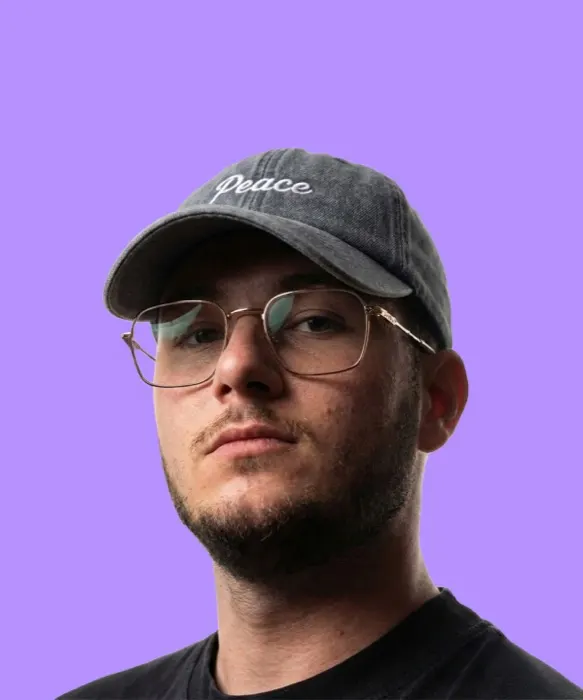
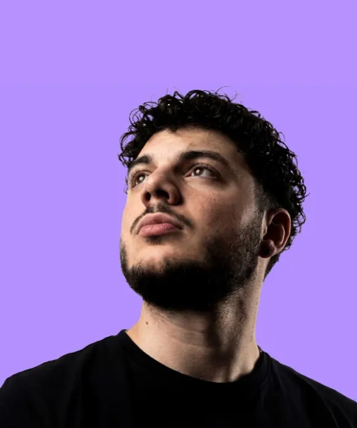
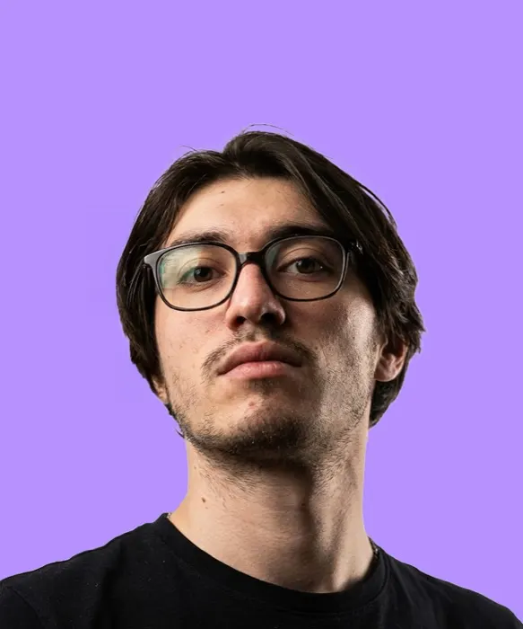

Hugo, Guillaume, Théo. Ce qu'on a appris sur le terrain.
Trois cofondateurs, une agence, une académie. Et maintenant une chaîne YouTube pour montrer comment les marques se construisent vraiment.
Notre histoire
Hugo commence l'e-commerce à 18 ans. Ancien graphiste, il vend des boutiques Shopify : 8 heures de travail par site. Il copie les plus gros shops de sa niche, et l'agence lui apprend ce qui convertit.
Guillaume et Théo sont cofondateurs de MADE. Le SaaS de Théo : créateur de boutique et générateur de créatives.
Ça fait 7 ans qu'on fait de l'e-commerce, 4 ans qu'on en vit. L'e-com est devenu une routine pour Hugo. Ce qui le motive maintenant, c'est de transmettre : c'est pour ça que l'Académie existe.
Notre expérience
Des boutiques sorties du studio MADE, comme Beauty Mart's, ScoreKeys ou Unik Journal. De vrais cartons, de vraies usines, de vraies commandes.
Ce qu'on veut démontrer
Le terrain plutôt que le personal branding. On ne cherche pas à vendre une image. On veut montrer comment les marques se construisent vraiment : leurs choix, leurs erreurs, ce qui se passe derrière.
Aucune promesse de gains. Ce qu'on raconte, on l'a testé chez nous avant de l'enseigner.
Sur la chaîne
Les docus
L'histoire d'une marque et les choix qui l'ont construite. Le premier, sur Liquid Death, sort le mardi 3 novembre.
Les vidéos de Théo
Des vidéos explicatives et concrètes sur l'e-commerce.